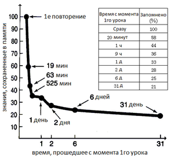

В психологии существует понятие spacing effect – эффекта, заключающегося в том, что информация запоминается лучше не тогда, когда она усиленно учится в какой-то короткий промежуток времени, а когда учится без лишних усилий, но в весьма отдаленные друг от друга периоды. Одним словом, лучше немного поучить сейчас и потом повторить через какое-то время, нежели пытаться все запомнить сразу. Существуют научные исследования, которые позволяют вычислять оптимальные интервалы между повторениями. Суть их в том, что сразу же после повторения слов вы тут же начинаете их забывать, и чем меньше вы работали со словами изначально, тем быстрее спадает эта кривая.
Подобные алгоритмы, как правило, имеют вполне серьезную научную базу и проверяются на большой аудитории людей на предмет эффективности. Всю эту теорию и алгоритмы мы используем в iLearnWords, чтобы облегчить вам жизнь и помочь учить слова эффективно.
Для свободного владения иностранным язиком одного только устного общени мало. Правописание очень важно при изучении язика. Для улучшения правописания слов в iLearnWords разработана серия упражнений которые делают процесс обучения интересным и эффективным.
Не знаете как написать или перевести услышанный вами текст? - программа сделает ето для вас… Умная система распознания и синтеза речи поможет вам общаться на иностранном язике. Она может Озвучивать текст или же наоборот написать (а при необходимости и перевести) текст под диктовку.
Последние разработки в етой области позволяют наконец сделать распознание и синтез речи действительно качественным, приносящим пользу, а не раздражение от бесконечного числа ошибок. iLearntWords может стать вашим переводчиком и слушателем. Не знаете как написать или перевести услышанный вами текст - именно для этих целий в LearntWords внедрена система роботы с голосом. Просто продиктуйте текст программе и совершиться практически чудо) - ваша речь превратиться в текст - готовый для немедленного перевода на требуемый язик. Удобно не правда ли?)